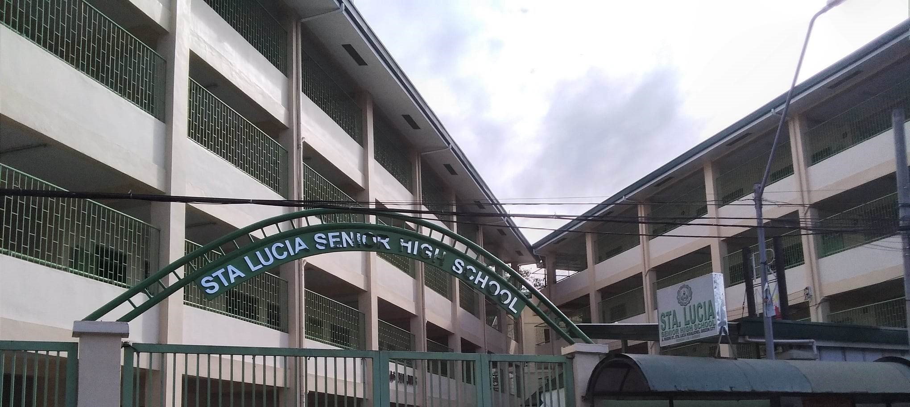

Welcome to STA. LUCIA SENIOR HIGHSCHOOL, where we inspire and empower students to reach their full potential. Our school is dedicated to fostering a supportive and engaging learning environment for students from Grade 11-12.
At STA. LUCIA SENIOR HIGHSCHOOL, we believe in a holistic approach to education. Our experienced faculty members are committed to providing personalized instruction that caters to the diverse needs of our students. We emphasize critical thinking, creativity, and collaboration, preparing our students for success in an ever-changing world.
Our curriculum is designed to challenge and inspire, incorporating a wide range of subjects. In addition to academic excellence, we offer various extracurricular activities, including sports, arts, and clubs, allowing students to explore their passions and develop their talents.
Community involvement is at the heart of our mission. We encourage parents and guardians to participate in their children's education through volunteer opportunities and regular communication. Together, we build a strong foundation for our students' future.
At STA. LUCIA SENIOR HIGHSCHOOL, we are committed to creating a safe and inclusive environment where every student feels valued and respected. We look forward to partnering with you on this educational journey.
11 A. Mabini St., Brgy. Sta. Lucia, Novaliches, Quezon City, Philippines, 1117
